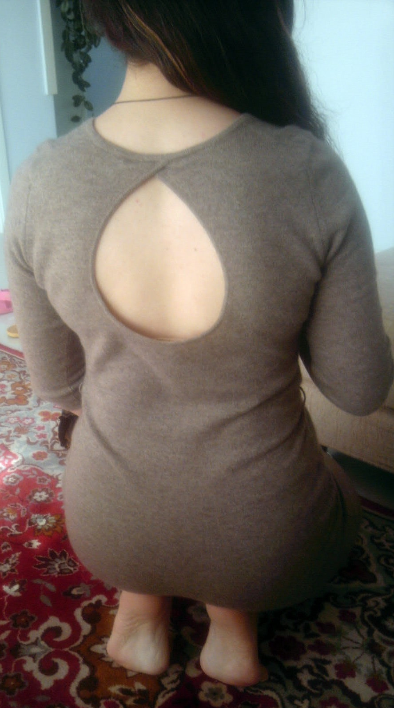

你们只看图不看字，这样合适嘛？（｀Δ´）！
补答：实际臀围自己量的是108cm，之前说的臀围105是我买衣服时的臀围下限（就是如果最大码只有105的话，那还勉强可以挤进去，就买买买.....），评论说胖的腿粗的，我绝对承认，从来没否认过呀，但是你说这并不算大，我不知道说什么了.....你拿皮尺跟你自己比比，是得多大才有资格答题T.T .....数据都是真的，就搁在这儿了，你们自己比对。
好多人问身高体重的，我170,70kg，健身一年多体重丝毫无变化，你们感受一下“遗传型身材”和“骨架大”的概念.....不过我觉得自己十分健康，所以胖并不困扰我。
初答是三个月前了，后来问题关闭了，我以为就不会有人看到了（知乎新手，到现在都不懂其中原理），最近又活跃起来，关注度猛增，还有点不知所措呢。后来才知道好像是有名人来答题又有其他人上热榜，我借了光。
期间我又发现屁股大的一个不好的体验，就是你拍图，人们就觉得你*求不满，就觉得你想约，或者肯定很好约....这是什么道理，就因为屁股大还怪我喽？
另外关注增加中还有好多妹子，同是天涯沦落人，全是泪啊......
谢谢各位看官。
------------------------------------以下即是初答---------------------------------
我可能有点遗传身材，从小就一直胖胖的，青春期开始关注自己的身材发现不仅腿粗，屁股还很大。
缺点，睡觉只能侧躺，仰睡的话腰会很疼
不能穿短款的衣服，因为显得屁股更大（粗大的感觉）
买裙子裤子外套甚至内裤一律都要先看最大码的臀围是多少（通常都是不够的）
好看的裤子没有号，臀围合适的裤子腰围绝对要大改（一条能穿进去的裤子穿多年）
在健身房不好意思趴在垫子上拉伸......（因为会鼓起来）
大腿怎么练都没效果（我安慰自己这是因为屁股太大接上细腿的话不太科学的原因）
优点，谈婚论嫁时比较有家长缘（好生养什么的.....）
自己身材很壮，没什么可炫耀的，只有大屁股了......
最近流行翘臀，偶尔能接受羡慕的眼光
买到合适的牛仔裤穿起来比较自信，比较好看
在健身房不用太努力臀部看起来也不错（不过考虑到年纪大了肉会变松还是趁着好劲头练成真正的翘臀吧）
另，女，臀围105
知乎第一答，只是看了大家的回答有种相逢何必曾相识的感觉，也想说点什么
赞同多了再放图吧，不然也用不着。
--------------------------------------------------------------------
补图：（真实图，就别转发啦）
上面这张是我妈给我拍的，下面是自己拿平板延时拍的
————————————————
2016.1.15
之前公开了一个微信号，正好四个月内先后加我的人大概1500人？我估计的数字，可能还多一点
其中好友申请太难听或看不顺眼的干脆没通过 还有一些出言不逊的删除 约约约的删除 加完还问我是谁的删除 觉得无法交流的删除，有时心情不好时看到很白痴的问题也会直接删除....
今天正好1200好友，突然不想再加了。觉得很无趣
1200个复制人，一半不说话，一半说一样的话。
我本是满怀真诚答每一道题的。
------------------------------------------------
2017.3.28
经过许多人的建议，开通了我个人的微信订阅号，注册十分简单，具体使用方法我还在琢磨。
主要围绕着我的知乎和我的生活，只是一些小事分享，希望能带给观看的人一点好心情。
公众号ID:terrytime7